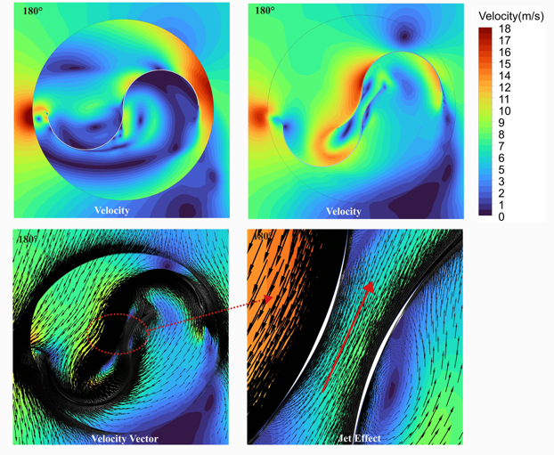
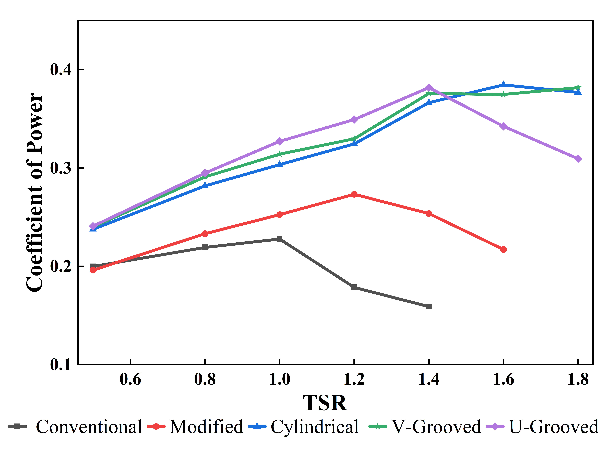

M.Tech Thermal Engineering, IIT (ISM) Dhanbad
B.Tech Mechanical Engineering, REC, Banda
Performance Evaluation of the Savonius Wind Turbine


Velocity contours and Cp vs TSR comparison for performance evaluation.
Fabrication and Analysis of Composite from Sugarcane Bagasse and Waste Plastic